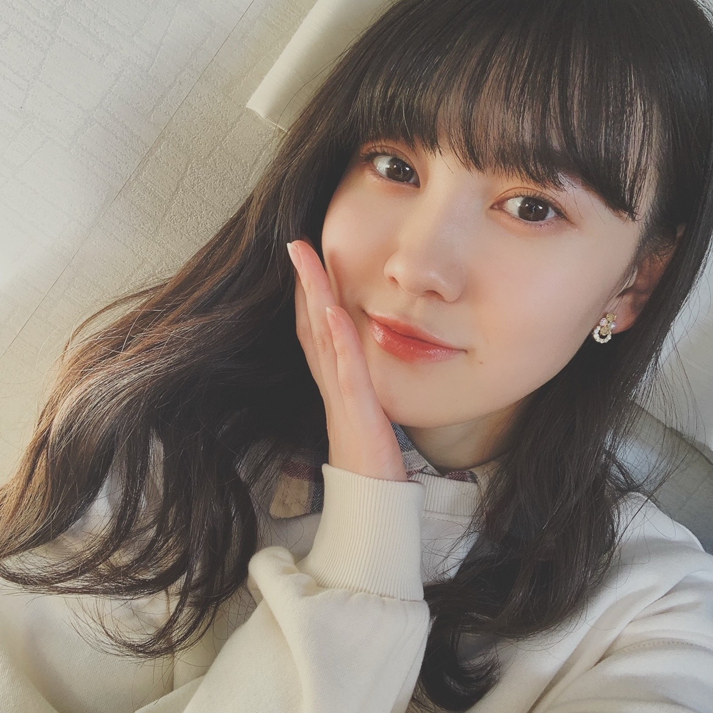
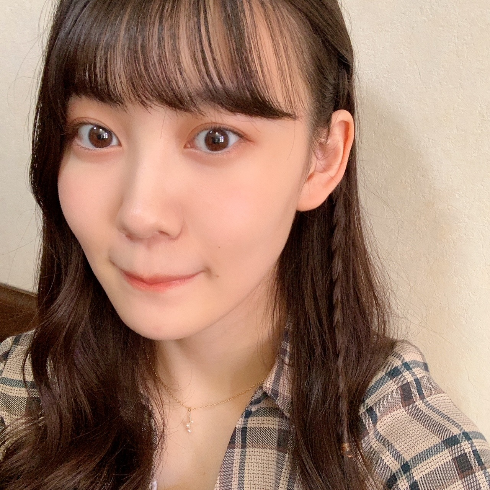
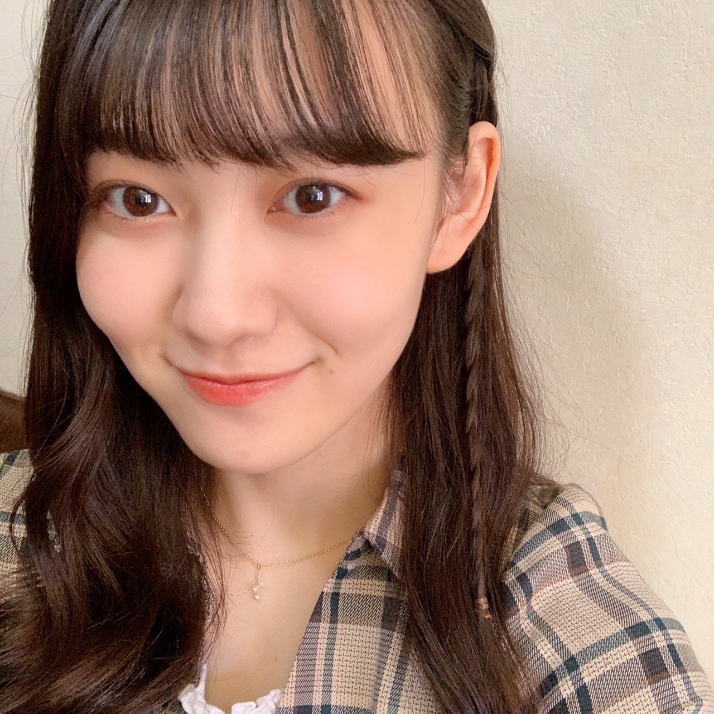

2020/1111Wed控えめなチェック 松尾美佑
今日は
いちいちいちいち
わんわんわんわん
な日ですね。
千葉県出身
高校2年生
16歳
今日はちょっぴり寝坊しちゃいました、
松尾美佑です¨̮
マイブームはメープルナッツですꪔ̤̥
今の気分は、ジェットコースターに無性に乗りたい気分です。
この気分たまにありますよね、共感して欲しいです
ʕʘ̅͜ʘ̅ʔ

髪の毛いつもと違う巻き方したつもりだったんですけど、あんまり分かりませんね(´◔_◔)
私の髪の毛の話はポイッとしておいて、
11月10日からスタートしました！
『ノギザカスキッツ ACT2』！！！
ノギザカスキッツに参加させて頂いてから、新しい自分の気持ちと出会うことが多くて嬉しいです！
考えたり向き合ったりする事が増えて、これが成長になってたらいいなぁって思います¨̮
3期生さんも合流されて、これからもっとパワーアップして楽しんで頑張ります！
(ง ꙭ)ง(ง ꙭ)ง(ง ꙭ)ง
そして！
4期生ライブの開催が発表されました！！！
いぇーーーい！！
本っ当に楽しみです
まだ皆さんにはお会いすることが出来ませんが、配信ライブという形で遠くにいる方へも届けることができるのがとても嬉しいです☺︎
皆さんの心をドキッとさせられるようなパフォーマンスを届けられるように精一杯頑張ります！
楽しみで楽しみで楽しみです。
自分の好きなことを楽しんで好きなだけ頑張れる環境に本当に感謝しています！
乃木坂46 4期生ライブ 2020
12月6日 です！


ちょっとだけの三つ編みがポイントです。
お返事！
✽ 最近ハマってる食べ物は？
メープルナッツ！もうすぐリスになれそう
✽ クリスマスプレゼントで1番欲しい物は？
塗り絵！
あと新しいクリスマスオーナメントも！
✽ 夜更かしできる秘技とかありますか？
目を閉じない。 ？？
✽ 漢検何級受けたの？？
ひみつー！絶対教えないよ (⃔ ･ᴗ･ )⃕↝
ただ言えるのは過去に5回漢検を受けて私は1回しか受かったことが無いということです。
✽ ミュウちゃんは恐竜好きですか？
今使ってる携帯のケースは恐竜さんが立体的に6匹ついています。
「どちらかと言えば好き」に分類されると思います。
11月10日！
阪口珠美さん、お誕生日おめでとうございます！
46時間テレビの時阪口珠美さんの電視台のたまトレをブース見てて、本当に明るくって楽しくって何よりも物凄くスタイルが良くて凄く印象に残っています！
これからノギスキの時とかにお話できたら嬉しいなと思います！
素敵な一年になりますようにと願っています！
先日、テストがあったんです。
だから前日に暗記科目だけでもと思って、
生物を沢山お勉強したんです。
そしたらなんと、私の受験科目は生物じゃなくて世界史でした。
元気だして頑張りましょう！
どーにかなる！
明日は〜
なお〜〜〜〜〜〜〜〜〜
今何食べたい？
からいものたべたい。
ミュウでした¨̮
襟がチェックです。
ばいっっっっっっっ( Ꙭ )/''

PROFILE
新4期生リレー
202104
| SUN | MON | TUE | WED | THU | FRI | SAT |
|---|---|---|---|---|---|---|
| 1 | 2 | 3 | ||||
| 4 | 5 | 6 | 7 | 8 | 9 | 10 |
| 11 | 12 | 13 | 14 | 15 | 16 | 17 |
| 18 | 19 | 20 | 21 | 22 | 23 | 24 |
| 25 | 26 | 27 | 28 | 29 | 30 | |

コメント(195)
いつか握手したいです！！！！
ライブ頑張って！楽しみにしているよ。
ー質問ー
・乾燥肌に悩んでいるけど、良い対策はあるかな？
・呼ばれたいあだ名ってある？
・皆にすすめたいもの、ことってある？
ありがとう！次回も楽しみにしているよ。
前回言った通りに部活の大会が終わって
肩の荷が降りてほっとしながらこのブログ読んでるよー
テストまであと一週間ないから
ちょっと大変だなーっておもうけど
つぎのブログ更新日がテスト初日だから
癒されにまた来るね笑
4期生ライブについて！
開催決まってほんとにめちゃくちゃ嬉しい
その日英検の受験日だから見れるかちょっと不安だけど、予定定まって見れるって決まったら絶対見るからね！
みゆりんがステージで輝く姿を見れることを楽しみにしてる！
✂︎- - - - - - - -キリトリ- - - - - - - - - - -✂︎
ちょっとだけの三つ編みが可愛い(⑉• •⑉)❤︎
今回写真のフィルターが違うのかな？
なんかいつもと違う感じに見えた！
漢検何級受けたか知りたかったなー笑
ちなみに私は準2級まで持ってる笑
✂︎- - - - - - - -キリトリ- - - - - - - - - - -✂︎
毎日少しずつ寒くなってるけと体調は大丈夫かな？笑
今日も質問(お願い？)で終わるね！
✽次のブログ日(16日)がテスト初日だから応援して欲しい！
✽乃木坂46の中で好きな衣装ってある？
今日も素敵なブログをありがとう☺︎
また5日後楽しみにしてます笑
そして4期生ライブ開催おめでとう
4期生全員としてライブで歌う姿を配信という形になってしまったけど見れるのは嬉しいよ！
楽しみです！ミューちゃんも楽しんでね！！最高のライブに！
そしてノギザカスキッツ2見ました！！
3期生も登場、これから3期生とどんなミューちゃんが見れるのかが楽しみだよ！
最後に質問！
イルミネーション見に行きたいー？
4期生ライブ楽しみです。もう練習は始まっていますか❓
テストが世界史だったのは笑いました。勉強も乃木坂も大変だけど頑張って〜
11月11日はポッキーの日らしいです。
(*･ω･)//////////←ポッキーです！受け取ってください！
4期生ライブ決まったね！おめでとう！
見たいけど勉強しなきゃだから見れないの(T-T)
ミュウちゃんのステージ見たかったよ〜
ノギスキもACT2で始まったね！終わっちゃうのかと思ったから本当に嬉しい！でも最近はなかなか見れてなくて1ヶ月分くらい録画が溜まってます。。早く見るね(^^)
漢検には4回落ちてるということですかね？？
僕は今年英検であと1点のところで不合格でした。。
そういうこともあるんだなぁと、ミュウちゃんは合格してるといいね！テスト勉強もお疲れ様！生物面白いから全然オッケーだと思います(^^)
質問なんですけど、生物は生物ですか？基礎ですか？？
ブログ更新ありがとう！次回も楽しみにしてます！
では！バイジョーじ！
ノギザカスキッツ見たよ〜！いつも楽しみに見てたから2始まって嬉しいです！！みゆちゃんの出てくる回楽しみにまってるね〜！
あと４期生ライブも絶対見ます〜！どんな歌披露してくれるのか今から楽しみに待ってまーす！応援伝わるように家で声だしとくね笑笑
またブログまってるねーー！
毎度楽しみに見ていまーす
質問です！
すきなブランドとかありますか？
好きなキャラクター教えてください！！！
ブログ更新ありがとう！
メープルくるみは食べたことあるけど、ナッツ全般がメープル味なのは食べたことないなぁ…
今度食べてみますね！
恐竜好きだと思うよ笑 ケース使ってるならw
漢検とテストお疲れ様〜
写真とっても可愛くて癒されました(^^)
◎最近、研修生仲間には連絡取りましたか？
ばいばぃ
本当に寒くなってきましたね。体調に気お付けて勉強頑張ってください。私も炬燵でぬくぬくと頑張っていますよ。来月のオンラインライブ楽しみ。
もう冬がすぐそばまで来てますね
ウインタースポーツとか何か得意なものありますか？
４期のライブ本当楽しみにしてます。
ライブの準備とかこれから大変ですけど頑張ってくださいねぇ。
ミュウちゃんのこと応援してます。
4期生ライブ楽しみです！ 思いっきり楽しんでください！
配信だけど美佑ちゃんのパフォーマンスをしっかりと目に焼き付けます！
4期生ライブ決定したね！
おめでとう！
前回は現地ライブやったから見に行けなくて残念だったけど、
今回は配信っていうことで、
地方勢の僕でも見れるから嬉しい！
絶対見るね！！
受験科目違った時の絶望感やばいよねww
世界史受験ってことは、みゅうちゃんって文系なのかな？
まだ決まってない感じ？？
教えて欲しいです！
Q.みゅうちゃんは文系？or理系？
大好き
ひろと
今日はワンダフルな1日だったよ、、笑笑
髪の毛三つ編みになってるとこ好き！
ライブ決まってめっちゃめっちゃ嬉しかった！！たのしみやね！！
質問〇朝寒い時に起きるコツってある？？
美佑ちゃんにとってより良い日々になりますように！
ゴードンでした！
チェックお似合いです。
控えめなチェックもよきです！
たまトレ、効きますよー
今日も癒され文章でした
ありがとう
喜章（よしあき）
ノギスキ2楽しかったね
来週からもワクワク〜
あと、今日ポッキーの日じゃん？＼(^o^)／（笑）
ちょっぴり寝坊したって、大丈夫だった(ﾟдﾟ)！
ジェットコースター駄目だから、共感できない(｡>﹏<｡)
うわーー、相変わらず美人だな(*´ω｀*)
ノギザカスキッツACT1の#1は本当に神すぎて、
今後も凄く期待する＼(^o^)／
あと、特に新4期生は3期生の先輩たちと距離縮めてほしいなあ(*´ω｀*)♪
4期生ライブ決定もおめでとう
16人のライブ凄く楽しみ＼(^o^)／
2枚めの写真の口は何？（笑）好き(*´ω｀*)
ちょっとだけ三編みめちゃ似合うよ＼(^o^)／
・リスみたいにもぐもぐしている姿を見たいなあ(｡>﹏<｡)（笑）
・えーー？今回の漢検の結果は？受かっても教えないの？じゃー、せめてれなち先輩に教えてよ(｡>﹏<｡)
・恐竜スマホケース見た～い(*´ω｀*)
たまみと仲良くなってほしいよ＼(^o^)／！！！
うわー、違う方を暗記したということ？最悪じゃん(｡>﹏<｡)
どうなってるかな？(｡>﹏<｡)
おーー、最後の写真は寝転んでる状態と思って違かったなあ（笑）
でもめちゃ綺麗、気になった(*´ω｀*)＼(^o^)／♡（笑）
これからも頑張って(/･ω･)/
また質問させてもらいます。
・四字熟語で一番好きな言葉は？
・一番好きな果物は？
・4期生ライブの目標は？？
・冬におすすめの乃木坂の曲教えてください
・冬に聴きたくなる曲とかある？
美祐ちゃんも活動がんばってください！
質問なんですけど英語できる男ってカッコイイですかね？
テストお疲れ様！受験科目間違えるって聞いたことないよ笑
みうちゃんは理系？文系？
4期生ライブまでもう一ヶ月切って、あっという間に当日になってそう。本当に楽しみにしてるよ。
ミュウちゃんのパフォーマンス目に焼き付けます！
今を乃木坂46のアイドルである事を楽しんでね。
これからも応援していきます！！
いつもと違う巻き方の美佑ちゃんは美人さんって感じで、細三つ編みの美佑ちゃんは可愛いって感じでどっちが好き？って聞かれたら困るくらいにどっちも好きです
ノギザカスキッツ一昨日の深夜？昨日の早朝？から始まりましたね
引き続き美佑ちゃん出た回は必ず感想書きますね
それと、毛利さんのYouTubeチャンネル見ましたよー
ほぼアドリブでのモノボケがあったとは
ネットで叩く役お待ちしております (もちろんリズムネタもね)
ではまた5日後楽しみに待ってます
4期生ライブまであと25日 (๑° ꒳ °๑) ブログ更新日だね！
ミュウスマイルも大好き！
チェックとっても似合ったますよ
美佑ちゃんのブログいつも楽しみにしてるの～〜
4期生ライブ楽しみ！\( ¨̮ )/
歌って踊るミュウちゃん見れるのがすごく嬉しいし楽しみだよ～ ◌
そして最後に質問！！
＊今ハマってるメイク道具はあったりしますか～？( ˘ᵕ˘ ).｡〇
次のブログも楽しみにしてるね！また5日後( ˆ ˆ )/♡
かわいいよ(*´ω｀*)
4期生ライブ全力で応援します！
頑張ってください！
4期生ライブ、楽しみやね。
確かに配信だとみんな平等に参加出来るから素晴らしいなあ～♪
そっかあ、高校通いながらなんだね。
一番大変な時期だ。
頑張って、みゅうちゃん！
たまちゃんに祝福の言葉をありがとう！
降星もデビュー当時から応援してきました。
だからその気持ちは良くわかりますよ。
だから言いたい
がんばれー、みゅうちゃん！
多少の事でへこたれないでね！
待ってたよー！
わんわんわんわん！
ブログ更新お疲れ様！！！！！
まず初めに…メープルナッツとは…？情弱だからわかんない(笑)教えて～
よし！握手会が再開されたらジェットコースター乗り行こって誘いに行くね(笑)行くならやっぱり富士急かな？(笑)
ノギザカスキッツ ACT2まだ見れてない
4期生ライブ今から楽しみだなぁ。
僕も楽しみで楽しみで楽しみです(笑)
最後に…どうにかなるとかなんとかなるとか思うことすごく大事だと僕も思います。確実な根拠はないけど(笑)どうにかなるって思っとかないと精神的にも追い込まれちゃうしね！！
元気だして頑張ろう！
また5日後！
秋田より
今日もありがとう！
巻き巻き可愛い(*´-`)
ノギザカスキッツACT2始まったね！！
録画したから休日まで楽しみにとっておく！！
ついに4期生ライブか〜
無事に成功するように今から祈っておく笑
珠ちゃん誕生日おめでとうだね！！
素敵な1年になりますように。
私事だけどさ、乃木フェスでananコラボガチャを引いたら美佑ちゃん当たった！！
めっちゃ嬉しい(o^^o)
大事にするねー！！
5日後のブログ更新も楽しみに待ってる(^^)
体調に気をつけてお仕事頑張ってね！！
仕事終わって見たブログだったので、松尾ちゃんのかわいさに心がとっても癒されました。自撮りがおしゃれでかわいらしいですね。モバメが始まるのがとっても楽しみです！
それでは、また〜。
自己紹介、すっごくいいね！！！
寝坊なんてへっちゃらだよ！笑
4期生ライブ決まったね！楽しみだなー！
また5日後楽しみにしてるねー！
テスト科目間違えるってどういうこと？笑
もしかしてミュウちゃんってちょっと抜けてるところある？笑
先生たいも可愛いから許しちゃうよねー
もう間違えないようにね！！！
また5日が楽しみにしてるねー！
コメントする